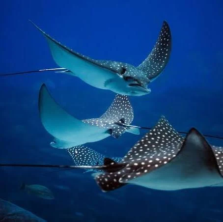

STINGRAY GUIDE
Explore the anatomy, habitat, diet and behaviour of stingrays.
01 — THE BASICS

Stingrays are cartilaginous fish, meaning their skeletons are made primarily from cartilage rather than bone.
They are closely related to sharks and belong to the group of animals known as elasmobranchs.
Their flattened bodies help them move close to the seafloor, while their broad fins give them a distinctive gliding movement.
02 — ANATOMY
A stingray's body has several features that help it survive in its underwater environment.
The large fins along the sides of the body help stingrays move through the water.
Openings behind the eyes allow water to enter and help many bottom-dwelling rays breathe while resting on the seafloor.
Stingrays have long tails. In some species, the tail contains one or more defensive spines.
Their flattened shape allows many species to stay close to the ocean floor while searching for food.
03 — DIET
Many stingrays are bottom-feeders and search through sand or sediment for food.
Crabs, shrimp and other small crustaceans can form part of a stingray's diet.
Some species also eat small fish when they are available.
Worms and other small animals living in sediment can also be eaten.
Certain stingrays eat molluscs and other animals found around the seafloor.
04 — HABITAT
Stingrays live in marine environments around the world. Different species have adapted to different habitats, including shallow coastal waters, sandy seafloors, coral reefs and deeper areas of the ocean.
05 — DEFENCE
Some stingray species have one or more barbed spines on their tails. These structures are primarily a defence against predators.
Stingrays generally prefer to avoid threats. Giving them space and observing them from a safe distance is the best way to appreciate these animals.
06 — DID YOU KNOW?
Stingrays are related to sharks.
Their skeletons are made primarily of cartilage.
Their flattened bodies help many species live close to the seafloor.
Different stingray species can have dramatically different sizes and shapes.
END OF GUIDE